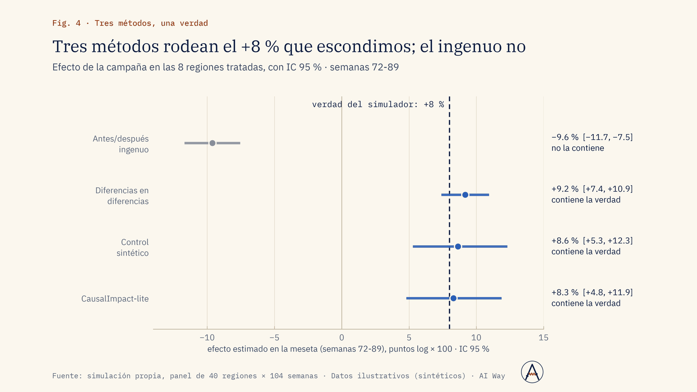
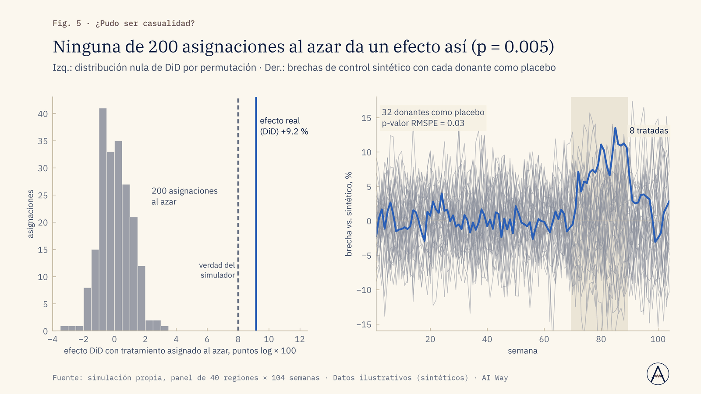
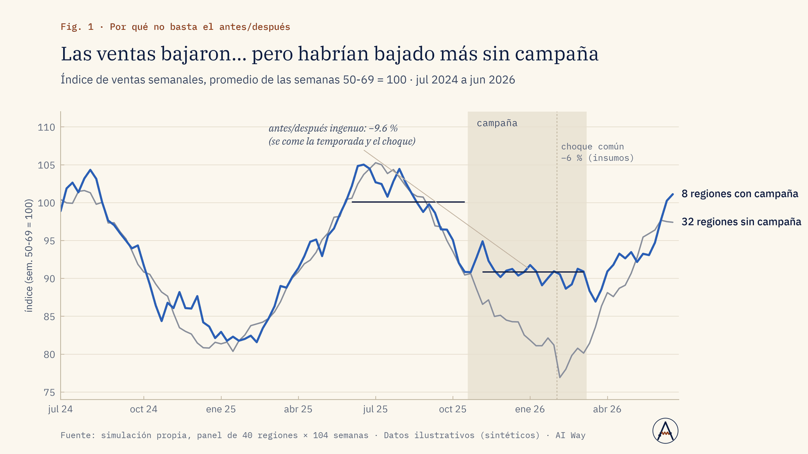

Ventas
¿La promoción vendió más o solo adelantó compras?
Comparamos tiendas con y sin promoción antes y después, y medimos el rebote de las semanas siguientes.
Repetir, ajustar o cancelar la promoción con el efecto neto.
Servicio · Nº 03
¿La campaña, el lanzamiento o la conversación en redes movió las ventas? Cuánto, con qué margen y con qué pruebas de que no es casualidad.
01 · El problema
Después de cada campaña, alguien muestra que las ventas subieron. Pero también subieron en las regiones sin campaña, o era temporada alta.
Sin un contrafactual creíble (qué habría pasado sin la acción), el presupuesto se reparte por intuición y las correlaciones entre menciones y ventas se confunden con causas. Hace falta un efecto estimado con intervalo y con pruebas de robustez, y saber cuándo los datos no alcanzan para concluir.
02 · Enfoque
03 · Resultados de la demo
Panel sintético de 40 regiones × 104 semanas con un efecto escondido de +8 % en 8 regiones (las más grandes, para que la selección no sea aleatoria), estacionalidad y un choque común en plena campaña. La pregunta: ¿los métodos encuentran el efecto que nosotros escondimos?
La campaña sumó +8.3 % de ventas: unas 782 mil unidades incrementales
Fuente: simulación propia, panel de 40 regiones × 104 semanas · Datos ilustrativos (sintéticos) · AI Way
Las menciones anticipan 2 semanas… cuando de verdad lo hacen
Fuente: simulación propia, panel de 40 regiones × 104 semanas · Datos ilustrativos (sintéticos) · AI Way



04 · Límites declarados
05 · Aplicaciones de negocio
Ejemplos de decisiones que este servicio ayuda a tomar; el alcance se define en el diagnóstico.
Ventas
Comparamos tiendas con y sin promoción antes y después, y medimos el rebote de las semanas siguientes.
Repetir, ajustar o cancelar la promoción con el efecto neto.
Marketing
DiD y control sintético arman el contrafactual con regiones sin campaña; el efecto sale con su intervalo.
Reasignar el presupuesto de medios a lo que sí movió la aguja.
Operación y costos
Las sucursales con el cambio son el grupo tratado y las demás el control; probamos tendencias previas.
Extender el cambio a toda la red o revertirlo.
Riesgo y crisis
Medimos las ventas contra un contrafactual desde la fecha de la crisis, con placebos que descartan azar.
Dimensionar la respuesta según el daño medido, no según el ruido.
Alerta temprana
Con series diferenciadas, correlación cruzada y Granger dicen si las menciones anticipan y con qué rezago.
Vigilar las menciones como alerta, sin confundirlas con la causa.
Dirección y estrategia
Simulamos con tus datos el efecto mínimo detectable: cuántas regiones control y semanas hacen falta.
Aprobar un piloto con potencia suficiente antes de invertir.
06 · Paquetes
Una acción, un resultado, un método principal (DiD o pre/post con contrafactual) y pruebas de tendencias previas.
Duración típica: 2 semanas
Tres métodos que se contrastan, placebos y permutaciones, indicador adelantado redes → ventas y recomendación de diseño.
Duración típica: 4 semanas
Programa de medición continuo: diseño de experimentos geográficos, cálculo de potencia, tablero de impacto por campaña y acompañamiento trimestral.
Duración típica: 8 semanas + trimestral
Sin precios publicados: cada propuesta se cotiza tras un diagnóstico de alcance.
07 · Preguntas frecuentes
No siempre; con regiones o tiendas no tratadas y suficiente historia se construye un contrafactual. Si se puede diseñar uno, mejor.
Idealmente varias veces la duración de la campaña antes de ella; con menos, el intervalo se ensancha y se dice.
No: prueba que ayudan a predecir. Lo decimos en el reporte.
Se modelan como covariables o se declaran como amenaza a la validez.
08 · Descarga
Presentación de la demo (PDF, 1.5 MB). El caso completo: problema, método, resultados contra criterio y límites declarados.
Descargar PDFSiguiente paso
En una llamada de 30 minutos revisamos si se puede, cómo lo mediríamos y qué no te podemos prometer.
Otros servicios